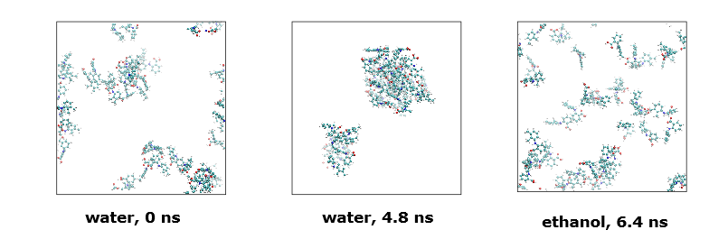

Cluster determination - Size and distribution¶
This page describes how you can use DL_ANALYSER to carry out cluster analyis. It is applicable to both atom-based and molecule-based analysis. Members that made up a cluster can be either atoms or molecules.

Cluster analysis
This option determines average cluster sizes and their distributions over all configurations. DL_ANALYSER identifies a cluster based on the distance criteria set between the particle members.
For example, consider a system contained salicyclic acid molecules and atom-based analysis is used to detect the presence of any clusters in the system. An example of control file is shown below with highlights showing the relevant input parameters.
--- Atom Range Definition and overall conditions for analysis as below.
1 3997 * Range of atom index (Group A). This must always define.
none * Range of atom index (Group B), if applicable. Or put 'none'.
1 * Analysis type: 1=atom-based 2 = molecule-base
3 * Atom-based analysis criteria: 1=all 2=only atoms within molecules 3=only atoms between molecules
none * Molecule-base analysis: name and no of atoms per molecule in Group A (MOLECULE A1)
none * Molecule-base analysis: name and no of atoms per molecule in Group A (MOLECULE A2, or 'none')
none * Molecule-base analysis: name and no of atoms per molecule in Group B (MOLECULE B1, or 'none')
none * For molecule-base analysis: name and no of atoms per molecule in Group B (MOLECULE B2, or 'none')
all * Range of MD time (ps) samples: t1 t2 (put 'all' if all samples to be included).
1 * Assign all atoms with unit mass = 1.0 (1=yes, 0=no)
0.0 0.0 0.0 * Translation marix on coordinates:x y z (assume orthorhombic cell)
0 * Periodic boundary? 0=no, other number = type of box (DLPOLY), auto = obtain from HISTORY
40.0 0.000 0.0000 * Cell vector a (x, y, z)
...
...
...
--- Structural analysis
1 * Activate analysis (1=yes 0=no)
test.out * Output file
1 * Number of every configuration to skip
0 * Reduced moments of distributions (p = 4, 6 and 8)
0 * Block analysis (1= yes, 0=no)
0 0 * Molecular matching (1=yes, 0=no) and output option (1=yes and 0=no).
none * Template file for matching (if 'none', first config in input file will be used).
0 * Center of gravity of Group, or every molecule (1=yes, 0=no)
0 * Radius of gyration (1=yes, 0=no)
0 * Asphericity (1=yes, 0=no)
1 3.5 * Cluster analysis (1=yes, 0=no), cutoff
0 AG A1 * Cluster index. (1=yes, 0=no) atom_label molecule_label
0 * System density (1=yes, 0=no)
The atom index range 1 to 3997 includes all salicyclic molecules. Solvent molecules, from index number 3998 onwards are ignored.
This is an atom-based analysis, and the only analysis criteria ‘only atoms between molecules’ (3) must be selected.
Next, the cluster analysis option must be switched on and the cutoff is set to 3.5 angstrom. Two molecules are considered as a group if any of each respective atom members from each molecule has a distance that is smaller or equal to the cutoff value set.
Diagram on the left below shows a cluster consists of three salicyclic acid molecules, showing the inter-molecular hydrogen bond interactions. They are considered as a three-molecule cluster and they are predominantly interacting via HB interactions which are typically much shorter, around 2.5 angstrom or less. However, a larger cutoff (3.5 angstrom) is defined, to detect molecules that are interacted over longer range such as hydrophobic and \({\pi}\) interactions.
{kind=link}
If molecule-based analysis is selected, then Molecule A1 would need to be explicitly defined but DL_ANALYSER will determine cluster members based on the distances between the centres of gravity of the molecules (diagram on the right).
Warning
Remember to change the cutoff value when switching from atom-based to molecule-based analysis. A larger cutoff is usually used for the latter since molecules are now reduced to a point. However, the cutoff cannot be too large. Otherwise, two molecules can be mis-identified as a cluster, with a third different molecule straddle between the molecules.
Example: mefenamic acid solution
Mefenamic acid is a nonsteroidal anti-inflammatory drug to treat pain. The drug is soluble in ethanol and insoluble in water.
Two independant sets of MD simulations have been carried out using DL_POLY, each of which consists of 40 mefenamic acid molecules solvated in the respective solvent molecules. The simulation box size is about 60 x 60 x 60 angstroms.
There is a total of 19,176 atoms with ethanol solvent, and a total of 21,765 atoms with water solvent. In both models, atom indices 1 to 1320 are the mefenamic acid molecules and the rest (1321 onwards) being the solvents. The models were setup by using DL_FIELD.
The DL_POLY HISTORY files were analysed by using the control options as shown.
--- Atom Range Definition and overall conditions for analysis as below.
1 1320 * Range of atom index (Group A). This must always define.
none * Range of atom index (Group B), if applicable. Or put 'none'.
1 * Analysis type: 1=atom-based 2 = molecule-base
3 * Atom-based analysis criteria: 1=all 2=only atoms within molecules 3=only atoms between molecules
none * Molecule-base analysis: name and no of atoms per molecule in Group A (MOLECULE A1)
..
..
auto * Periodic boundary? 0=no, other number = type of box (DLPOLY), auto = obtain from HISTORY
40.0 0.000 0.0000 * Cell vector a (x, y, z)
0.000 40.0 0.00000 * Cell vector b (x, y, z)
0.0 0.000 40.0 * Cell vector c (x, y, z)
..
..
--- Structural analysis
1 * Activate analysis (1=yes 0=no)
test.out * Output file
5 * Number of every configuration to skip
..
..
0 * Radius of gyration (1=yes, 0=no)
0 * Asphericity (1=yes, 0=no)
1 3.5 * Cluster analysis (1=yes, 0=no), cutoff
0 C20 A1 * Cluster index. (1=yes, 0=no) cutoff atom_label molecule_label
0 * System density (1=yes, 0=no)
..
..
Graph below shows the average cluster size variation with respect to MD simulation time.
{kind=link}
For mefenamic acid in ethanol, the clusters were loosely aggregated, and constantly forming and breaking apart. This is due to the comparable favour interactions with both solvents and solutes.
For mefenamic acid in water, the solutes prefer to interact with one another and less favourable to interact with the water solvent. Hence, the organic clusters grow in general with respect to time. Flat lines indicate that once clusters are formed, they do not easily break apart.
Graph below indicates distribution of cluster sizes identified throughout the whole simulations.
{kind=link}
Here, mefenamic acids in ethanol form dimeric structures most of the time and there is a spread of cluster sizes that loosely interact with one another. In the case of mefenamic acid in water, clusters are stable and can fuse with one another to form bigger sizes.
Finally, below shows atomic configurations of the simulation models (solvent molecules excluded for clarity purposes).
{kind=link}
Diagrams on the left and middle indicate the mefenamic acid configurations in water at the beginning (0 ns) and at MD time = 4.5 ns. Note the molecules aggregated to form two large clusters.
Diagram on right indicates mefenamic acids in ethanol only form small aggregates.